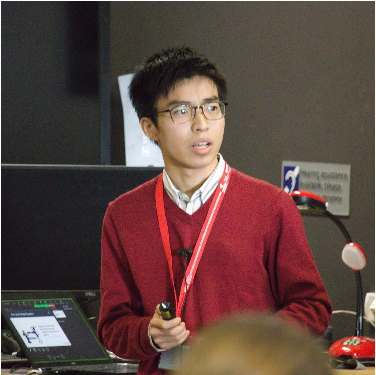

プロフィール
学歴
| 年 | 学校 | 専攻 |
|---|---|---|
| 2022.04 - | 静岡大学大学院 | 総合科学技術研究科 情報学専攻 |
| 2018.04 - 2022.03 | 静岡大学 | 情報学部 情報科学科 |
| 2015.04 - 2018.03 | 常葉大学附属橘高等学校 | 英数科 |
| 2012.04 - 2015.03 | 静岡市立清水袖師中学校 | - |
| 2006.04 - 2012.03 | 静岡市立清水袖師小学校 | - |
職歴
| 法人名 | 役職・業務 | 期間 |
|---|---|---|
| （個人契約） | 家庭教師 | 2023.08 - |
| 株式会社 TRGネットワーク 個別指導塾トライプラス 助信校 |
塾講師 | 2021.03 - |
| 国立大学法人静岡大学 情報学部 |
パート教務職員(プログラミング／データサイエンス科目のティーチングアシスタント) | 2021.06 - |
| 国立大学法人静岡大学大学院 創造科学技術研究科 |
研究補佐員 | 2022.05 - 2023.03 |
| 静岡大学生活協同組合 | 学生監事，学生理事，学内配達員，新入生サポートセンタースタッフ ほか | 2019.01 - 2023.03 |
リーダー経験
| 役職 | 任期 |
|---|---|
| 竹内研究室 学生代表 | 2022.04 - 2023.03 |
| 第21回 認知的コミュニケーションワークショップ 幹事 | 2022.09 |
| 静岡大学生協学生委員会 学生委員長 | 2019.04 - 2020.03 |
| 常葉大学附属橘高等学校 生徒会長 | 2016.11 - 2017.10 |
| 常葉大学附属橘高等学校 英語部部長 | 2016.11 - 2017.10 |
| 静岡市立清水袖師中学校 学年委員長 | 2014.04 - 2015.03 |
| 静岡市立清水袖師小学校 児童会執行部 | 2011.04 - 2012.03 |